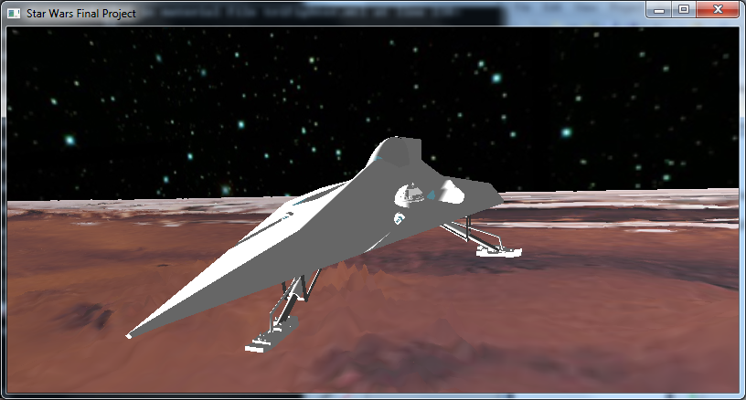

Units
Friendly Units
Landspeeder
This is the player controlled unit in the game. Has default HP of 500. Relatively fast attack speed. Fires green lasers.Enemy Units
Tri-Fighter
This is a mid-range unit. Relatively high HP and medium attack probability.Jedi Fighter
This is the weakest enemy unit. Low HP and low attack probability.
Tie-Fighter
This is another mid-range unit. Relatively high HP and medium attack probability.YT1300
This is a higher range unit. Relatively high HP and high attack probability.Death Star
This is the BOSS unit. High attack probability, and depending on the mode played, either annoyingly high HP or impossibly high HP.Model Sources
Landspeeder and Mars terrain was provided by CS175 HW4Death star was provided by http://gfx-3d-model.blogspot.com/2008/07/deathstar.html
All other units were from http://www.scifi3d.com/